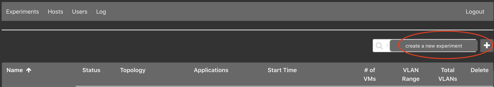
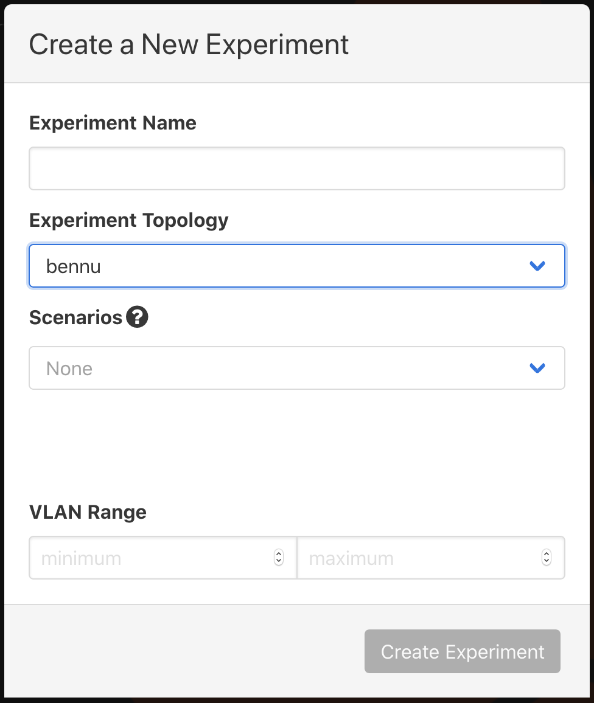
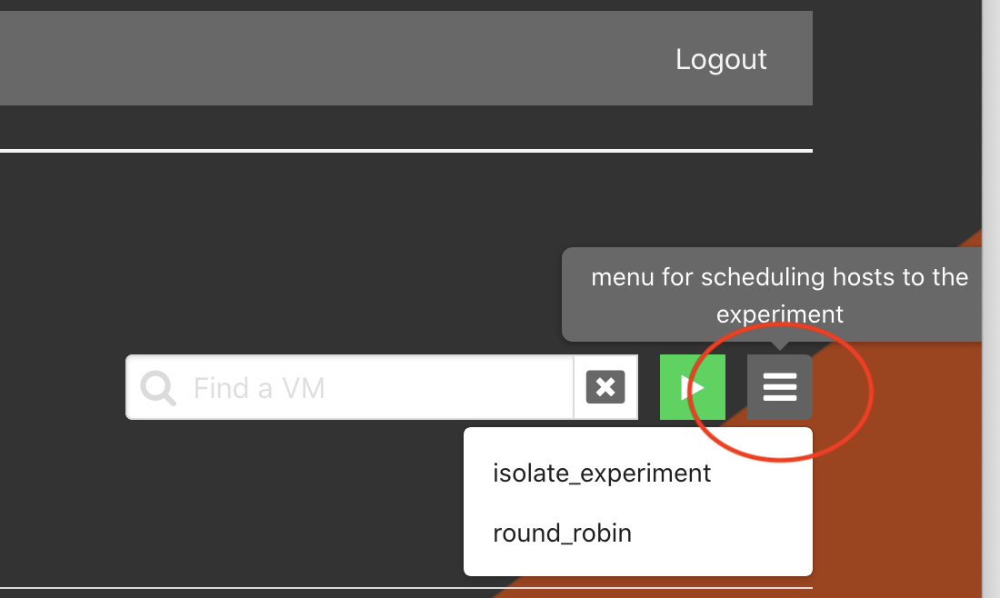

Experiments¶
For experiments spanning multiple minimega hosts, see GRE Mesh
to trunk experiment networks between hosts with --use-gre-mesh, including
the physical network MTU requirements.
Listing Experiments¶
From the Web-UI¶
Click on the Experiments tab. This will display all available experiments that
the user has access to view or edit.
From the Command Line Binary¶
This will display a list of all available experiments: it is run as a root
user.
Starting / Stopping Experiments¶
From the Web-UI¶
Clicking the stopped button will start the experiment; similarly the started
button will stop the experiment. A progress bar is used to update the progress
of starting an experiment. During the update to the experiment -- starting or
stopping -- it will not be accessible or available to delete.
From the Command Line Binary¶
Or ...
Or ...
Optionally, you can use the --dry-run flag to do everything except call out to
minimega.
After an experiment stops successfully, phēnix deletes the VM disk snapshots
created for file injection. To keep these snapshots for debugging, use
--keep-injection-snapshots or its -K shorthand:
Only phenix exp stop accepts this option. Stopping an experiment from the
Web-UI, or with phenix exp restart, always deletes the snapshots.
The phenix exp --help command will output:
Experiment management
Usage:
phenix experiment [flags]
phenix experiment [command]
Aliases:
experiment, exp
Available Commands:
apps List of available apps to assign an experiment
create Create an experiment
delete Delete an experiment
edit Edit an experiment
list Display a table of available experiments
reconfigure Reconfigure an experiment
restart Restart an experiment
schedule Schedule an experiment
schedulers List of available schedulers to assign an experiment
scorch Start a Scorch run for experiment
start Start an experiment
stop Stop an experiment
trigger Trigger lifecycle stage for app(s) in experiment
Flags:
-h, --help help for experiment
Use "phenix experiment [command] --help" for more information about a command.
Note
For a list of global flags supported across all phenix subcommands, see Global Flags.
Create a New Experiment¶
From the Web-UI¶

Click the + button to the right of the filter field.

Enter Experiment Name and Experiment Topology, the remaining selection are
optional. In this example, bennu is an example topology and is not included
by default. You will need to create your own topology(ies).
Purely via the Web-UI (Uploading Topo/Scenario Files)¶
You can create an experiment entirely through the Web-UI using custom topology and scenario files without needing to use the CLI:
-
Upload Configurations in the Configs Tab:
- Navigate to the Configs tab.
- Click the Upload button to upload your topology file (
.yaml). - (Optional) Click Upload again to upload your scenario file (
.yaml). - Verify that your uploaded configurations appear in the table (e.g.,
topology/my-topologyandscenario/my-scenario).
-
Create Experiment in Experiments Tab:
- Navigate to the Experiments tab.
- Click the
+button to open the creation dialog. - Enter an Experiment Name.
- Select your uploaded topology from the Experiment Topology dropdown.
- (Optional) Select your uploaded scenario from the Experiment Scenario dropdown.
- Click Save to create the experiment.
From the Command Line Binary¶
You can create an experiment using either saved configuration names from the phēnix store or direct file paths to topology and scenario configuration files (.yaml).
# Using stored configuration names
phenix experiment create <experiment name> -t <topology name>
phenix experiment create <experiment name> -t <topology name> -s <scenario name>
# Using direct file paths for topology and scenario
phenix experiment create <experiment name> -t /path/to/topology.yaml
phenix experiment create <experiment name> -t /path/to/topology.yaml -s /path/to/scenario.yaml
# Specifying a base directory and disabled apps
phenix experiment create <experiment name> -t /path/to/topology.yaml -s /path/to/scenario.yaml -d </path/to/dir/> --disabled-apps "app1,app2"
The phenix exp create --help command will output:
Create an experiment
Used to create an experiment from existing configurations; can be a
topology, or topology and scenario, or paths to topology/scenario
configuration files (YAML or JSON). (Optional are the arguments for
scenario or base directory.)
Usage:
phenix experiment create <experiment name> [flags]
Examples:
phenix experiment create <experiment name> -t <topology name or /path/to/filename>
phenix experiment create <experiment name> -t <topology name or /path/to/filename> -s <scenario name or /path/to/filename>
phenix experiment create <experiment name> -t <topology name or /path/to/filename> -s <scenario name or /path/to/filename> -d </path/to/dir/>
phenix experiment create <experiment name> -t <topology name or /path/to/filename> -s <scenario name or /path/to/filename> --disabled-apps "app1,app2"
Flags:
-d, --base-dir string Base directory to use for experiment (optional)
-b, --default-bridge string Default bridge name to use for experiment (optional) (default "phenix")
--disabled-apps strings Comma separated ist of apps to disable
-h, --help help for create
-s, --scenario string Name of an existing scenario to use (optional)
-t, --topology string Name of an existing topology to use
--vlan-max int VLAN pool maximum
--vlan-min int VLAN pool minimum
Deleting Experiments¶
From the Web-UI¶
The experiment must be stopped before it can be deleted; click the trash can icon next to the experiment to delete it.
From the Command Line Binary¶
An experiment must be stopped before it can be deleted:
Alternatively, the -f/--force flag can be used to automatically stop a
running experiment before deleting it, similar to docker rm -f:
Using all instead of a specific experiment name will delete all stopped
experiments (or, when combined with --force, all experiments regardless of
whether they are running).
The phenix exp delete --help command will output:
Delete an experiment
Used to delete an existing experiment; experiment must be stopped.
Using 'all' instead of a specific experiment name will include all
stopped experiments. Use the -f/--force flag to automatically stop
a running experiment before deleting it.
Usage:
phenix experiment delete <experiment name> [flags]
Aliases:
delete, del
Flags:
-f, --force Stop a running experiment before deleting it
-h, --help help for delete
Scheduling an Experiment¶
From Web-UI¶
The experiment must be stopped; click on the experiment name to enter the Stopped Experiment component. Click on the hamburger menu to the right of the filter field and start button to select a desired schedule.

From the Command Line Binary¶
The list of available schedules can be found by running the following command.
Then apply the desired schedule with the following command.
Triggering App Lifecycle Stages¶
You can manually trigger an app lifecycle stage for an experiment without stopping and restarting it.
From the Command Line Binary¶
The phenix exp trigger command runs one app lifecycle stage on demand:
Where <lifecycle> is one of the following stages, or its shorthand:
configure(orconfig)pre-start(orpre)post-start(orpost)running(orrun)cleanup(orclean)
Providing no app names triggers the stage for every app in the experiment. Use
all instead of an experiment name to trigger the stage in every experiment.
The running stage is skipped for experiments that are not running.
Examples:
Trigger the running stage for all apps in an experiment:
Trigger the running stage for a specific app:
Trigger the configure stage for all experiments:
trigger configure vs. reconfigure¶
phenix exp trigger configure and phenix experiment reconfigure both re-run
the configure lifecycle stage, but they serve different purposes and are not
interchangeable:
phenix exp trigger configure |
phenix experiment reconfigure |
|
|---|---|---|
| Use case | Manually re-run a specific app's (or apps') configure hook on demand, e.g. for debugging | Re-apply configuration after editing an experiment's stored topology, scenario, or deployment settings |
| Targets specific apps | Yes, via [<app name> ...] |
No, always applies to every app |
| Validates the experiment config | No | Yes |
| Runs registered config hooks | No | Yes |
| Resets the minimega bridge | No | Yes (deletes it so it's recreated with current settings, unless using the GRE mesh) |
| Guards against running experiments | No | Yes (refuses to run if the experiment is running) |
Use phenix experiment reconfigure after changing an experiment's stored
settings. Use phenix exp trigger configure for targeted, on-demand
re-invocation of one or more apps' configure hooks, such as when debugging an
app.
Deprecated Command¶
The phenix exp trigger-running command, and its trig alias, are deprecated
and will be removed in a future release. Use phenix exp trigger running
instead. The deprecated command:
Is equivalent to:
Common Workflows¶
1. Basic Experiment Lifecycle¶
# 1. Create experiment from topology/scenario files
phenix exp create my-experiment -t /path/to/topology.yaml -s /path/to/scenario.yaml
# 2. Start the experiment
phenix exp start my-experiment
# 3. View status and inspect VMs
phenix exp list
phenix vm info my-experiment
# 4. Stop the experiment when testing finishes
phenix exp stop my-experiment
# 5. Delete the experiment
phenix exp delete my-experiment
2. Updating and Reconfiguring an Experiment¶
# Reconfigure a stopped experiment after modifying underlying configuration files
phenix exp reconfigure my-experiment